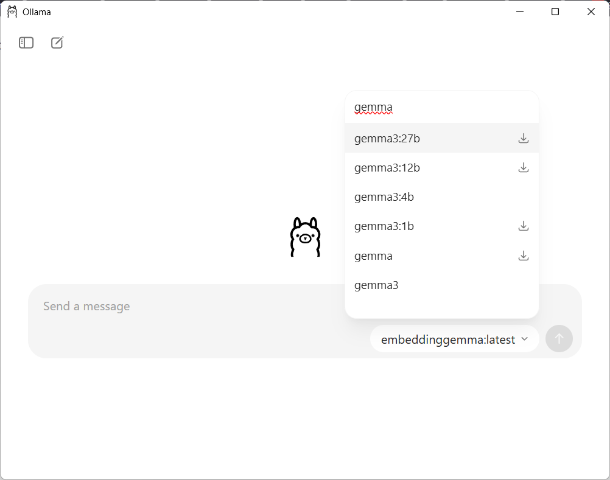

PPGP/UFES - Aula aberta Inteligência Artificial e Pesquisa em Psicologia - 29/09/25
Prof. Dr. Hugo Cristo Sant’Anna - hugo.santanna@ufes.br
1. Requisitos
Esta demonstração depende dos seguintes programas e pacotes:
Positron: ambiente de desenvolvimento gratuito R/Python baseado em VSCode.
R-base: Distribuição básica da linguagem R, versão 3.6 ou posterior.
Ollama: interface para manipulação de modelos de linguagem.
gemma3 e embeddinggema: modelos de linguagem desenvolvidos pelo Google para utilização com Ollama.
Pacotes R: ollamar para conexão com Ollma e openxlsx para manipulação de planilhas Microsoft Excel (XLSX). A instalação de ambos será feita via códigos deste script.
Para instalar os modelos gemma3 e embeddinggemma, instale Ollama e busque um por vez na lista dos que podem ser instalados. Digite qualquer pergunta no chat para que a ferramenta faça o download e o instale. O modelo embeddinggemma apresentará um erro porque não possui capacidade de responder questões por chat.

Seleção de modelos em Ollama
Obs.: O modelo gemma3 pode ser substituído por qualquer outro, desde que seu sistema tenha memória RAM disponível. O modelo embeddinggemma tem finalidade específica (geração de embeddings) e pode ser substituído por outro com mesmas capacidades.
2. Carregando o script R
Após instalar todos os itens, abra este notebook no Positron. Salve este arquivo em qualquer pasta do seu computador e, com Positron aberto, selecione a opção:
File (arquivo) -> Open Folder (abrir pasta)
Localize a pasta em que o download foi salvo e confirme a seleção. Em seguida, o documento do notebook aparecerá na aba Explorer (explorador) na lateral esquerda da tela. Dê um duplo-clique sobre o arquivo para carregá-lo.
Para executar a demonstração, basta executar as células de código, pressionando o ícone ▷ (run/executar) de cada uma delas. Observe as mensagens de sucesso ou erro no espaço imediatamente abaixo das células.
Enquanto o código é executado, Positron exibe um temporizador que serve de parâmetro para a complexidade da operação. As requisições aos modelos de linguagem podem demorar vários segundos ou mesmo minutos para serem concluídas.
3. Funções básicas
O primeiro passo consiste em carregar o pacote ollamar, que permite comunicação entre o modelo carregado em Ollama e a linguagem R.
package ‘ollamar’ successfully unpacked and MD5 sums checked
The downloaded binary packages are in
C:\Users\msn\AppData\Local\Temp\RtmpGQd2BW\downloaded_packages
Attaching package: ‘ollamar’
The following object is masked from ‘package:stats’:
embed
The following object is masked from ‘package:methods’:
show
Em seguida, devemos testar a conexão entre R e Ollama e verificar se o modelo gemma3 ou outro desejado estão corretamente instalados.
# testa a conexãotest_connection()
Ollama local server running
<httr2_response>GET http://localhost:11434/
Status: 200 OK
Content-Type: text/plain
Body: In memory (17 bytes)
Se Ollama responder com Status: 200 OK, é sinal que está tudo certo e você pode executar as células seguintes! Se outra mensagem for exibida, certifique-se que Ollama está ativo no seu computador.
A próxima célula lista os modelos instalados em Ollama.
O trecho de código a seguir testa a geração de textos a partir de um prompt simples para o modelo gemma3:4b. Você pode escolher entre qualquer modelo instalado, mas precisa informar o nome completo como indicado na coluna name da resposta da célula anterior.
A estrutura da requisição baseada na funçãp generate() é:
generate(modelo,prompt)
Onde modelo é o nome do modelo que processará o prompt, que é um texto entre aspas.
# armazena resultado do prompt na variável 'resposta'resposta <- generate("gemma3:4b", "Liste os dias da semana em inglês e português.")
Para visualizar a resposta, utilizamos a função resp_process(), que converte os dados gerados pelo modelo para os seguintes formatos: * df: data frame, estrutura de dados padrão do R * jsonlist: objeto JSON, para ser consumido principalmente por aplicações Web (JavaScript) * raw: formato padrão de Ollama, com embeddings e outras informações de execução * resp: resposta da requisição, incluindo status, URL do servidor OLlama, formato da resposta e tamanho (em bytes) * tools: resposta para execução de tarefas por agentes
Neste exemplo, formataremos a resposta em texto para exibí-la com a função cat(). Ela está preparada para converter os símbolos \n em quebras de linha, facilitando a visualização da resposta.
# converte 'resposta' em 'dias' no formato textodias <- resp_process(resposta,"text")# imprimecat(dias)
Com certeza! Aqui estão os dias da semana em inglês e português:
**Inglês:**
* Monday - Segunda-feira
* Tuesday - Terça-feira
* Wednesday - Quarta-feira
* Thursday - Quinta-feira
* Friday - Sábado
* Saturday - Domingo
* Sunday - Segunda-feira
**Português:**
* Segunda-feira
* Terça-feira
* Quarta-feira
* Quinta-feira
* Sexta-feira
* Sábado
* Domingo
4. Configurando parâmetros
Como vimos na apresentação, podemos alterar a variabilidade das respostas do modelo por meio dos parâmetros temperature, top_k e top_p. Para isso, a função generate() possui argumentos que definem esses parâmetros, afetando a geração das respostas.
O exemplo a seguir gera três respostas diferentes para o mesmo prompt, em função dos valores elevados dos três parâmetros. Observe que os argumentos model e prompt estavam implícitos no exemplo anterior e agora foram utilizados para deixar o código mais preciso.
O argumento system define o comportamento geral do modelo e é considerado na geração de toda a resposta.
# armazena resultado do prompt nas variáveis 'resposta1', 'resposta2' e 'resposta3'resposta1 <- generate( model="gemma3:4b", system="Gere os textos em português do Brasil, utilizando termos técnicos. Seja conciso e objetivo", prompt="Explique, em até 100 palavras, qual é o objeto de estudos da Psicologia.", temperature=2.0, top_k=100, top_p=1.0)resposta2 <- generate( model="gemma3:4b", system="Gere os textos em português do Brasil, utilizando termos técnicos. Seja conciso e objetivo", prompt="Explique, em at'é 100 palavras, qual é o objeto de estudos da Psicologia.", temperature=2.0, top_k=100, top_p=1.0)resposta3 <- generate( model="gemma3:4b", system="Gere os textos em português do Brasil, utilizando termos técnicos. Seja conciso e objetivo", prompt="Explique, em até 100 palavras, qual é o objeto de estudos da Psicologia.", temperature=2.0, top_k=100, top_p=1.0)
O resultado precisa ser novamente convertido em formato texto antes de ser exibido:
# converte respostas para o formato textoexplicacao1 <- resp_process(resposta1,"text")explicacao2 <- resp_process(resposta2,"text")explicacao3 <- resp_process(resposta3,"text")# imprime cada resposta adiciona a quebra de linha ao finalcat("resposta 1:\n",explicacao1,"\n\n")cat("resposta 2:\n",explicacao2,"\n\n")cat("resposta 3:\n",explicacao3)
resposta 1:
A Psicologia é o estudo científico do comportamento humano e dos processos mentais. Detalha processos como percepção, cognição, emoção, motivação, personalidade, desenvolvimento e bem-estar psíquico. Suas disciplinas analisam desde os níveis biopsicossociais das atividades humanas, empregando métodos científicos para entender e reter padrões individuais e gerais, visando a explicitação de suas interligações, teorias bem estabelecidas e inferências fundamentadas em rigor crítico.
resposta 2:
A Psicologia investiga os processos mentais e o comportamento humano, analisando **fenômenos psicológicos** de forma sistemática. Seu objeto de estudo abrange desde **hábitos** cotidianos até desvios em saúde mental, passpor processos como percepção, pensamento, emoção, motivação e desenvolvimento. Adicionalmente, a psicologia busca compreender as interfaces entre mente e corpo, além das nuances da relação humano-sociedade, através de princípios de áreas especializadas, seguindo abordagens nomotéticas e descritivas em cada investigação feita.
resposta 3:
A Psicologia é o estudo científico do comportamento e dos processos mentais humanos. Busca compreender a mente, desde os aspectos conscientes – como pensamento, emoção e percepção – até os estados inconscientes. Fundamenta-se na observação, experimento e uso de métodos quantitativos para explorar a normalidade e patologias, analisando aspectos biofísicos, cognitivos, sociais, culturais e desenvolvimentois da experiência humana e suas manifestações.
A variação nas respostas ocorre com o mesmo prompt em função dos parâmetros. Experimente alterar os valores de temperature, top_k e top_p para visualizar as diferenças entre as respostas, com atenção especial ao vocabulário utilizado e estrutura do texto.
No exemplo a seguir, eliminamos a variabilidade reduzindo o valor de temperature para zero. A condicional if() ao final do trecho compara o conteúdo das respostas quanto à sua igualdade e apresenta o resultado.
# armazena resultado do prompt na variável 'resposta_fixa' (1ª vez)resposta_fixa <- generate( model="gemma3:4b", system="Gere os textos em português do Brasil, utilizando termos técnicos. Seja conciso e objetivo", prompt="Explique, em até 100 palavras, qual é o objeto de estudos da Psicologia.", temperature=0)# converte e imprime 1º resultadoexplicacao_fixa1 <- resp_process(resposta_fixa,"text")cat("1ª vez:\n",explicacao_fixa1,"\n")# armazena resultado do prompt na variável 'resposta_fixa' (2ª vez)resposta_fixa <- generate( model="gemma3:4b", system="Gere os textos em português do Brasil, utilizando termos técnicos. Seja conciso e objetivo", prompt="Explique, em até 100 palavras, qual é o objeto de estudos da Psicologia.", temperature=0)# converte e imprime 2º resultadoexplicacao_fixa2 <- resp_process(resposta_fixa,"text")cat("\n2ª vez:\n",explicacao_fixa2,"\n")# armazena resultado do prompt na variável 'resposta_fixa' (3ª vez)resposta_fixa <- generate( model="gemma3:4b", system="Gere os textos em português do Brasil, utilizando termos técnicos. Seja conciso e objetivo", prompt="Explique, em até 100 palavras, qual é o objeto de estudos da Psicologia.", temperature=0)# converte e imprime 3º resultadoexplicacao_fixa3 <- resp_process(resposta_fixa,"text")cat("\n3ª vez:\n",explicacao_fixa3,"\n\n")# compara o conteúdo das très respostasif (explicacao_fixa1 == explicacao_fixa2 && explicacao_fixa1 == explicacao_fixa3) {print("Respostas iguais")} else {print("Respostas diferentes")}
1ª vez:
A Psicologia é o estudo científico da mente e do comportamento humano. Seus objetos de estudo abrangem desde processos cognitivos como percepção, memória e linguagem, até as emoções, motivações e a dinâmica das relações interpessoais.
Utilizando métodos científicos, a Psicologia busca compreender as causas e consequências do comportamento, bem como desenvolver teorias e intervenções para promover o bem-estar e a saúde mental. A disciplina investiga tanto aspectos conscientes quanto inconscientes da experiência humana.
2ª vez:
A Psicologia é o estudo científico da mente e do comportamento humano. Seus objetos de estudo abrangem desde processos cognitivos como percepção, memória e linguagem, até as emoções, motivações e a dinâmica das relações interpessoais.
Utilizando métodos científicos, a Psicologia busca compreender as causas e consequências do comportamento, bem como desenvolver teorias e intervenções para promover o bem-estar e a saúde mental. A disciplina investiga tanto aspectos conscientes quanto inconscientes da experiência humana.
3ª vez:
A Psicologia é o estudo científico da mente e do comportamento humano. Seus objetos de estudo abrangem desde processos cognitivos como percepção, memória e linguagem, até as emoções, motivações e a dinâmica das relações interpessoais.
Utilizando métodos científicos, a Psicologia busca compreender as causas e consequências do comportamento, bem como desenvolver teorias e intervenções para promover o bem-estar e a saúde mental. A disciplina investiga tanto aspectos conscientes quanto inconscientes da experiência humana.
[1] "Respostas iguais"
5. Visualizando embeddings
Lembre-se da explicação sobre como LLMs funcionam: tokens têm representações numéricas nos termos de vetores multidimensionais (embeddings), sobre os quais podemos realizar operações de álgebra linear.
A função embed() retorna essa representação para o texto fornecido ao modelo embeddinggemma. Observe que não há argumento prompte sim input, uma vez que nao se trata de uma requisição de chat e sim de embeddings.
# gera embeddingrepresentacao <- embed( model="embeddinggemma", input="O céu está azul.")# exibe as primeiras linhas da representaçãohead(representacao)
Como discutimos, embeddings representam tokens em espaços multimensionais, nos quais podemos aplicar métricas diversas para estabelecer a similaridade entre termos, frases ou textos completos.
O exemplo a seguir compara três frases:
O céu está azul e está um dia ensolarado.
Está um dia chuvoso com céu nublado.
Hoje é um dia de verão.
O clima de hoje é de inverno.
# embedding da primeira frasee1 <- embed( model="embeddinggemma", input="O céu está azul, está um dia ensolarado e faz calor.", normalize=TRUE)# embedding da segunda frasee2 <- embed( model="embeddinggemma", input="Está um dia chuvoso, com céu nublado e tempo frio.", normalize=TRUE)# embedding da terceira frasee3 <- embed( model="embeddinggemma", input="Hoje é um dia de verão.", normalize=TRUE)# embedding da quarta frasee4 <- embed( model="embeddinggemma", input="O clima de hoje é de inverno.", normalize=TRUE)
As representações das frases 1 e 3 deveriam estar próximas, uma vez que falam da mesma região no espaço de tokens, enquanto as frases 2 e 4 falam de outra região. Assim, a frase 1 deve estar mais distante de 2 e 4 e mais próxima de 3.
Calcularemos o produto escalar dos vetores utilizando a função sum() e a multiplicação embeddings desejados como argumentos.
# ensolarado e calor x nublado e friocat("1. e1 x e2:",sum(e1*e2),"\n")# ensolarado e calor x verãocat("2. e1 x e3:",sum(e1*e3),"\n")# nublado e frio x verãocat("3. e2 x e3:",sum(e2*e3),"\n")# nublado e frio x invernocat("4. e2 x e4:",sum(e2*e4),"\n")
1. e1 x e2: 0.7090227
2. e1 x e3: 0.7846455
3. e2 x e3: 0.6637207
4. e2 x e4: 0.7911741
6. Classificação de texto
Podemos utilizar os recursos dos modelos de linguagem para classificar textos: categorizações, sentimentos e outras inferências. Para isso, definiremos o argumento system como um agente que realiza tarefas de classificação.
O vetor comentarios contém respostas de internautas para uma notícia publicada no perfil de A Gazeta no Instagram. A tarefa atribuída ao modelo consiste em avaliar o sentimento do comentário (negativo/positivo).
O laço for() permite executar o mesmo conjunto de instruções sucessivas vezes, variando o conteúdo do prompt. Desse modo, poderíamos ter conjuntos de dados com milhares de linhas analisados pelo mesmo laço, mantendo as orientações do modelo.
# vetor com os comentárioscomentarios <- c("Querer o melhor para o nosso país. Isso se chama patriotismo. Aprendam bolsominios.","Lembrando que a gazeta é da Globo. Faz parte da circo e nunca da as notícias corretas","Estadista e melhor Presidente de todos os tempos da história da redemocratização!","melhor é ver nos comentários o povo brasileiro torcendo pelo presidente americano. Inacreditável!!!","Lula acredita em papai Noel kkkkkk o gato guando quer pegar o rato nao o espanta ,Trump tá só amaciando pra lula ir ficar frente a frente com lula pra falar como ele aceita o Moraes perseguir tanto os bolsonaristas .")# laço pelos comentáriosfor (c in1:length(comentarios)) {# requisição resposta <- generate( model="gemma3:4b", system="Aja como um analista de redes sociais e identifique o sentimento dominante nos comentários em 'positivos', 'negativos', ou 'neutros'. Responda de forma concisa, com até 50 palavras.", prompt=paste("Qual é o sentimento dominante deste comentário? ",comentarios[c]) )# exibe resposta cat("Comentário",c,"-",resp_process(resposta,"text"),"\n----------------------------\n")}
Comentário 1 - Sentimento: Negativo.
Análise: O comentário expressa desdém e crítica direcionada aos "bolsominions", utilizando uma linguagem carregada e depreciativa. A afirmação "querer o melhor para o nosso país" é contraproducente, sendo usada como provocação.
----------------------------
Comentário 2 - Sentimento: Negativo. O comentário expressa desconfiança e crítica à Globo, associando-a a "circo" e à falta de notícias precisas. A linguagem utilizada indica insatisfação e percepção de parcialidade.
----------------------------
Comentário 3 - Sentimento: Positivo. O comentário expressa forte admiração e elogio ao indivíduo, utilizando linguagem altamente positiva e reverente. A frase "melhor Presidente" indica um sentimento de grande aprovação.
----------------------------
Comentário 4 - Sentimento: Negativo. O comentário expressa incredulidade e discordância, indicando uma reação negativa à situação descrita - o apoio brasileiro ao presidente americano. A exclamação reforça o tom de insatisfação e crítica.
----------------------------
Comentário 5 - Sentimento: **Negativo**. A postagem contém sarcasmo ("Lula acredita em papai Noel") e críticas direcionadas a ambos os políticos, indicando uma opinião negativa e desconfiança em relação aos eventos e figuras mencionadas.
----------------------------
De modo semelhante, podemos instruir o modelo a analisar entrevistas em planilhas e identificar os temas de cada uma, apoiando o processo de análise de conteúdo. O pacote openxlsx facilita a importação de planilhas do Microsoft Excel.
Nesse caso, a construção do prompt baseado no modelo P.A.R.T.E. é fundamental.
# carrega pacoteinstall.packages('openxlsx')library(openxlsx)# importa dadosentrevistas <- read.xlsx('entrevistas.xlsx')# analisa temasfor (e in1:nrow(entrevistas)) {# requisição com prompt avançado (modelo PARTE) resposta <- generate( model="gemma3:4b", system="Aja como um pesquisador realizando análise de conteúdo de entrevistas. Seja conciso e apresente suas respostas em até 50 palavras.", prompt=paste("Liste os principais temas da entrevista a seguir, indique dados econômicos que possam ter sido citados e classifique o desempenho de Lula em 'positivo', 'negativo' ou 'neutro'.","\n###\n","Utilize o seguinte formato para a resposta:\n","1. Temas: [temas da entrevista]","2. Dados econômicos: [sim/não] - [dados]","3. Desempenho de Lula: [positivo/negativo/neutro]","\n###\n", entrevistas$entrevista[e], sep="") )# exibe resposta cat("Entrevista",e,"-",entrevistas$veiculo[e],"\n",resp_process(resposta,"text"),"\n----------------------------\n")}
Installing package into ‘C:/Users/msn/AppData/Local/R/win-library/4.5’
(as ‘lib’ is unspecified)
package ‘openxlsx’ successfully unpacked and MD5 sums checked
The downloaded binary packages are in
C:\Users\msn\AppData\Local\Temp\RtmpGQd2BW\downloaded_packages
Entrevista 1 - bbc
1. **Temas:** A entrevista aborda a disputa comercial entre Brasil e EUA, imposto de 50% sobre produtos brasileiros, a investigação judicial contra o ex-presidente Bolsonaro, a soberania nacional, a busca por novos mercados, a importância da negociação internacional e a relação bilateral entre os países.
2. **Dados Econômicos:** Sim - Dados como o superávit comercial histórico do Brasil em relação aos EUA (410 bilhões de dólares), o PIB do Brasil representando 1,7% das exportações e a necessidade de encontrar novos mercados (BRICS, União Europeia, ASEAN) são mencionados.
3. **Desempenho de Lula:** Neutro – Lula adota uma postura pragmática, enfatizando a importância da negociação e do respeito à soberania, sem idealizar a relação com os EUA. A crítica à imposição de tarifas e a defesa da utilização de todos os instrumentos diplomáticos indicam uma abordagem cautelosa e estratégica.
----------------------------
Entrevista 2 - fantástico
1. **Temas:** Saúde (problemas de saúde recorrentes, cirurgias, exames), Política (descontentamento com oposição, reformas tributárias), Economia (juros altos, inflação, responsabilidade fiscal), Relacionamentos Pessoais (relacionamento com Janja, apoio da família).
2. **Dados econômicos:** "PIB de 22 trilhões", "taxa de juros acima de 12%", "inflação de 4 e pouco".
3. **Desempenho de Lula:** Neutro. Lula demonstra preocupação com a economia e desafios do país, mas sua resposta é focada em ações corretivas e controle de gastos, sem avaliar diretamente o desempenho de seu governo.
----------------------------
Entrevista 3 - vários
1. **Temas:** Reconstrução do país, retomada do crescimento econômico, combate à desinformação, COP30, Amazônia, transição energética, relação com a imprensa.
2. **Dados econômicos:** Sim – Menciona crescimento de 7,5% no mandato anterior, G20 extraordinário, BRICS, acordos com EUA, US$ 1 trilhão e 300 bilhões de dólares para combater o desmatamento, e investimentos na indústria.
3. **Desempenho de Lula:** Positivo – Apresenta-se como pronto para "reconstruir" o país, "retomar o crescimento", e demonstra confiança em resultados futuros, usando dados do passado para sustentar suas expectativas.
----------------------------